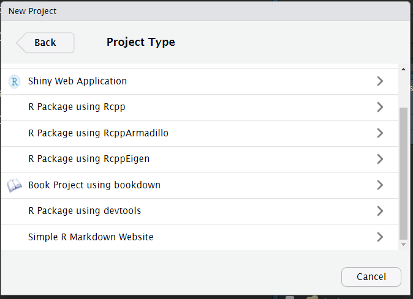

Analysis as a package
analysis-as-a-package.RmdTargets:
- Awareness: the structure of R packages offers more than simply packing new functionalities. It is also a place to share datasets and statistical analysis.
- RStudio offers functionalities supporting this approach.
1. Example use case
Lets consider an example: I need to run a statistical analysis resulting in a Sankey diagram.
In a script.R:
- prepare a dummy set of data following the Analysis Data Model (ADaM, CDISC).
- pre process the data (e.g. filter, transformations).
- obtain the graph.
# Dummy collection of ADaM datasets: ADSL and ADPASI
raw <- read.table(
file.path(
"https://raw.githubusercontent.com/VIS-SIG/Wonderful-Wednesdays",
"master/data/2021/2021-04-14/WWW_SustainedResponse.csv"
),
header = TRUE,
sep = ",",
stringsAsFactors = FALSE
)
library(tidyr)
library(dplyr)
#>
#> Attaching package: 'dplyr'
#> The following objects are masked from 'package:stats':
#>
#> filter, lag
#> The following objects are masked from 'package:base':
#>
#> intersect, setdiff, setequal, union
raw <- as_tibble(raw)
adsl <- raw %>%
distinct(USUBJID, TRT, BASELINE) %>%
mutate(
ARMCD = factor(
TRT,
levels = c(
"COMPARATOR TREATMENT",
"ACTIVE TREATMENT DOSE 01",
"ACTIVE TREATMENT DOSE 02"
),
labels = c("ARM A", "ARM B", "ARM C")
)
)
adpasi <- raw %>%
select(-TRT) %>%
gather(key = "AVISIT", value = "AVAL", -USUBJID) %>%
mutate(
AVISIT = ifelse(AVISIT == "BASELINE", "WEEK00", AVISIT),
PARAMCD = "PASITOT"
) %>%
select(USUBJID, PARAMCD, AVISIT, AVAL)
# function: replace missing levels of a factor by "Missing"
add_missing <- function(x) {
ll <- levels(x)
ll <- c(ll, "Missing")
x <- as.character(x)
x <- ifelse(is.na(x), "Missing", x)
factor(x, levels = ll, exclude = NULL)
}
# Analysis dataset preprocessing
set.seed(3)
ads <- adpasi %>%
filter(AVISIT %in% c("WEEK00", "WEEK01", "WEEK08", "WEEK52")) %>%
mutate(
time = factor(AVISIT),
rsp = cut(AVAL, breaks = 3, labels = c("Low", "Mid", "High")),
rsp = add_missing(rsp),
subj = gsub("^SUBJECT (.*)$", x = USUBJID, replacement = "\\1")
) %>%
select(subj, time, rsp) %>%
filter(subj %in% sample(unique(subj), 200)) %>%
arrange(rsp, time, subj)
ads %>%
head() %>%
knitr::kable(caption = "Outlook of the data")| subj | time | rsp |
|---|---|---|
| 015 | WEEK00 | Low |
| 136 | WEEK00 | Low |
| 256 | WEEK00 | Low |
| 617 | WEEK00 | Low |
| 688 | WEEK00 | Low |
| 757 | WEEK00 | Low |
# Generate the graphic
library(ggalluvial)
#> Loading required package: ggplot2
ads %>%
ggplot(aes(x = time, stratum = rsp, alluvium = subj, fill = rsp)) +
geom_stratum(colour = NA) +
geom_flow(stat = "alluvium", color = "gray85", lwd = .01) +
scale_fill_manual(
values = setNames(
viridis::viridis(4, begin = .2, end = .8, option = "C", direction = -1),
nm = levels(ads$rsp)
)
)Result, it is working and:
- rely on a new function (
add_missing()).- "I will probably need that in the future for another request"
- nice to have: decide the number of subjects for the examples, could be a new function, to generate dummy data on demand.
- "That so convenient to have ready to work dummy datasets!"
- needs functions define in other projects:
- "Oh! I remember, I already coded this functionalities for a previous analysis!":
-
clean_slate(): figure annotations (header, title, notes and footer). -
preview(): preview the generated pdf itself.
2. Package equivalence
2.1. Overview
Create a R project package
Either use devtools::create(), or follow the RStudio user interface in 5 clicks:
Click 1 - Create a new project

Click 2 - in a new directory

Click 3 - R Package using devtools

Click 4 - Create project
Click 5: already setup
- Move the script in
inst/, a rather permissive area of the package.- makes sections ot enable show/hide document outline in RStudio interface, and make section knit-able. e.g.
- The folder
R/contains the documented functions:- a new function to create a dummy dataset from Wonderful Wednesday PASI example:
adam_ww(). - a new function to add missing data:
add_missing(), similar toaddNA(). - copy-paste function developed in other project:
preview()-
clean_slate()family.
- a new function to create a dummy dataset from Wonderful Wednesday PASI example:
The markup system roxygen2, helps making a complete documentation. Example with the function add_missing() in R/add_missing.R.
#' Factor: NA is "Missing" level
#'
#' Assign the value "Missing" to missing values of a factor. Build as [addNA()].
#'
#' @param x (`factor`)
#' @param missing_lvl (`character`)
#'
#' @export
#' @examples
#'
#' animals <- as.factor(c("cat", "dog", NA))
#' animals
#' add_missing(animals)
#'
add_missing <- function(x, missing_lvl = "Missing") {
assertthat::assert_that(is.factor(x))
ll <- levels(x)
ll <- c(ll, missing_lvl)
x <- as.character(x)
x <- ifelse(is.na(x), missing_lvl, x)
factor(x, levels = ll, exclude = NULL)
}2.2. Practically
- Not a drastic change:
- keep working with
script.R - once a function is identified, write in
R/.
- keep working with
Frequently asked qestions:
- "Many files, will not this be complicated to find a file in the future?"
: Go to function definition.
- "Many files, should every file be sourced with
source()":-
devtools::load_all(): load all the package, all the function becomes available similarly to alibrary()call for an installed package.
-
- "Many files, how a programmer/reviewer knows where to start?"
-
usethis::use_readme_rmd(), useknitr::read_chunk(inst/study.R)to screen the script sections, and use empty named r code chunk to decide which section to execute in which order. - Good because:
- there are sections needed for development only, but not for the program run (e.g. preview) while code-commenting is bad practice.
- run the program is simple as clicking on the knit button.
- room for contextual information (e.g. a decision made because of an unexpected finding).
-
3 Perspectives:
Standard format comes with standard-support tools:
-
devtools:-
<ctrl>+<shift>+<d>, equivalent todevtools::document()updates the function documentation (populates theNAMESPACEfile andman/folder). -
<ctrl>+<shift>+<e>, equivalent todevtools::check()very a large number of standards (e.g. functions are well documented, dependencies are well accounted for, examples are working).
-

Devtools: look at the build panel
-
lintr:- helps checking the code is lint-free, clean. Helps in the adoption of good practices and standard.
Lintr: keep-up with code quality
-
pkgdown:- build an website: the result
README.mdbecomes the home page, functions are documented inreference, vignette added inarticles. - All functions are cross-referenced: the link
adam_ww(), will bring you to the right page.
- build an website: the result
And much more:
- data: contains datasets, possibly along with the preprocessing code.
- templates: complexe templates ins
inst/rmarkdown. -
vignettes/: a place to explain a framework (e.g. the present document). -
tests/: place for automated test (e.g. test that the ADSL data returned byadam_wwis such asUSUBJIDis the unique row identifier). - Git integration.